Breakthroughs in Numerical Calculus#
“Nature laughs at the difficulties of integration.” – attributed to Pierre-Simon Laplace
The differential and integral calculus is by far the oldest subject in
this package, yet its numerical side is a comparatively young,
20th-century development: how to differentiate or integrate a function
you can only sample, or how to differentiate a computer program
directly. This chronology traces the ideas behind
mathematicskit.calculus, from Archimedes’ polygons and the
calculus of Isaac Newton and Gottfried Wilhelm Leibniz to the
reverse-mode automatic differentiation that now trains every large
neural network.
c. 250 BCE – Archimedes and the Method of Exhaustion#
Archimedes’ Measurement of a Circle trapped the circle between inscribed and circumscribed regular polygons. Starting from hexagons and doubling the number of sides four times, he reached 96-gons and proved \(3\tfrac{10}{71} < \pi < 3\tfrac{1}{7}\). The method of exhaustion, which approximates a curved quantity by a sequence of polygonal ones whose error can be made as small as desired, is the ancestor of the limit arguments on which integral calculus rests. Each doubling cuts the width of Archimedes’ bracket by roughly a factor of four, an early example of a predictable convergence rate.
Implementation: mathematicskit.calculus.systems.exhaustion.archimedes_pi_bounds()
runs the side-doubling recurrence (a harmonic mean for the outer
perimeter, a geometric mean for the inner one) and returns every bound
in an ExhaustionResult.
The tests reproduce Archimedes’ 96-gon bounds.
References: Archimedes, “Measurement of a Circle,” in T. L. Heath, The Works of Archimedes (Cambridge: Cambridge University Press, 1897).
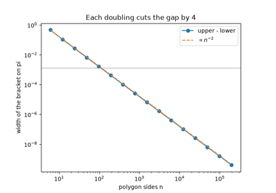
Archimedes’ method of exhaustion: squeezing pi
c. 1636 – Fermat’s Adequality#
Pierre de Fermat’s method for maxima and minima, circulated in manuscript around 1636, compared \(f(x+h)\) with \(f(x)\), divided the difference by \(h\), and then set \(h\) to zero. His first example split a segment of length \(a\) into two parts with the largest product, \(x(a-x)\), and found \(x = a/2\). The procedure is the forward difference quotient taken to its limit, decades before Isaac Newton and Gottfried Wilhelm Leibniz made derivatives systematic. At a finite step the quotient is only first-order accurate: its error shrinks in proportion to \(h\).
Implementation: mathematicskit.calculus.systems.finite_differences.forward_difference()
computes Fermat’s difference quotient at a finite step. The example
solves for the point where it vanishes, watches that point approach
\(a/2\) as \(h\) shrinks, and measures the \(O(h)\) error.
References: P. de Fermat, “Methodus ad disquirendam maximam et minimam,” in Varia Opera Mathematica (Toulouse, 1679).
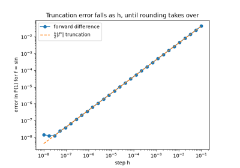
Fermat’s adequality: maxima from a difference quotient
1665-1684 – Newton and Leibniz Invent the Calculus#
Isaac Newton, working privately from about 1665, and Gottfried Wilhelm Leibniz, working independently and publishing first in 1684, each developed a complete differential and integral calculus. The result was one of the bitterest priority disputes in the history of mathematics. Leibniz’s notation, \(dy/dx\) and \(\int\), is the one still in universal use; Newton’s fluxion notation survives mainly in his collected works. Both men agreed on the two central facts that every numerical scheme in this module approximates: the derivative is a limiting difference quotient, and the definite integral is a limiting sum.
Implementation: mathematicskit.calculus.systems.finite_differences.central_difference()
approximates the limiting difference quotient at a finite step size;
mathematicskit.calculus.systems.quadrature.TrapezoidalRule
approximates the limiting Riemann sum.
References: G. W. Leibniz, “Nova Methodus pro Maximis et Minimis,” Acta Eruditorum (1684), 467-473.
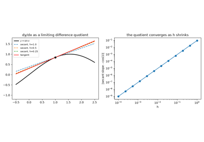
Newton and Leibniz: the derivative and the integral as limits
1715 – Taylor’s Theorem#
Brook Taylor’s 1715 Methodus Incrementorum Directa et Inversa gave the general expansion of a function as a power series built from its derivatives at a single point. Colin Maclaurin’s 1742 Treatise of Fluxions used the special case expanded about zero so heavily that this case now carries his name. Taylor’s theorem underlies almost every numerical approximation in this package: the error term of each finite-difference formula, the convergence rate of each quadrature rule, and the convergence order of each root-finder are all Taylor-series arguments.
Implementation: mathematicskit.calculus.systems.taylor_series.maclaurin_coefficients()
and taylor_remainder_bound()
implement the series and its Lagrange remainder bound.
References: B. Taylor, Methodus Incrementorum Directa et Inversa (London, 1715); C. Maclaurin, A Treatise of Fluxions (Edinburgh, 1742).

Taylor’s theorem: polynomials, remainder bound, and convergence
1735-1742 – The Euler-Maclaurin Formula#
Leonhard Euler in 1735 and Colin Maclaurin in 1742 independently found the exact relation between a sum and an integral. Applied to the trapezoidal rule \(T_n\) with step \(h\), it reads
where \(B_{2k}\) are the Bernoulli numbers. The formula explains why the trapezoidal rule’s error is an expansion in even powers of \(h\), which is what Romberg integration later exploits, and why the rule is spectrally accurate for smooth periodic integrands, whose endpoint terms cancel.
Implementation: mathematicskit.calculus.systems.quadrature.euler_maclaurin_trapezoid()
adds the correction terms, using Bernoulli numbers from
scipy.special.bernoulli(), to the trapezoidal rule. The tests
confirm that each extra term reduces the error by orders of magnitude.
References: L. Euler, “Inventio summae cuiusque seriei ex dato termino generali,” Commentarii Academiae Scientiarum Petropolitanae 8 (1741), 9-22; C. Maclaurin, A Treatise of Fluxions (Edinburgh, 1742).
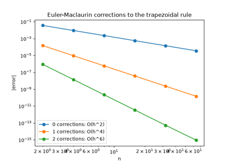
Euler-Maclaurin: correcting the trapezoidal rule
1743 – Simpson’s Rule#
Thomas Simpson’s 1743 Mathematical Dissertations popularized the rule now named for him: fit a parabola through each pair of adjacent panels and integrate the parabolas exactly. Johannes Kepler had used the same three-point formula in 1615 to measure wine barrels, and Roger Cotes’s 1722 Harmonia Mensurarum set it in the wider family of Newton-Cotes rules. Although it is built from parabolas, Simpson’s rule integrates cubics exactly, and its composite form converges at fourth order, \(O(h^4)\), against the trapezoidal rule’s \(O(h^2)\).
Implementation: mathematicskit.calculus.systems.quadrature.SimpsonsRule
wraps scipy.integrate.simpson(). The tests check exactness on a
cubic, and the example compares its convergence with the trapezoidal
rule.
References: T. Simpson, Mathematical Dissertations on a Variety of Physical and Analytical Subjects (London, 1743).
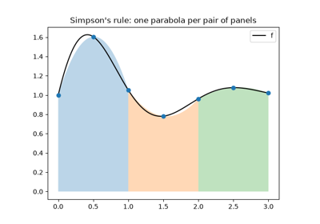
Simpson’s rule: parabolas through pairs of panels
1814 – Gauss and Gaussian Quadrature#
Carl Friedrich Gauss’s 1814 paper asked a sharp new question. If you may choose both the sample points and their weights, rather than only the weights as in Newton-Cotes rules, how accurate can an \(n\)-point quadrature rule be? Gauss’s optimal nodes integrate every polynomial up to degree \(2n-1\) exactly, roughly twice the degree an equally spaced rule with the same number of points achieves. Carl Gustav Jacob Jacobi showed in 1826 that these nodes are the roots of the degree-\(n\) Legendre polynomial.
Implementation: mathematicskit.calculus.systems.quadrature.GaussianQuadrature
wraps scipy.integrate.fixed_quad(), and
legendre_nodes_and_weights()
wraps numpy.polynomial.legendre.leggauss() for the underlying
node and weight computation.
References: C. F. Gauss, “Methodus Nova Integralium Valores per Approximationem Inveniendi,” Commentationes Societatis Regiae Scientiarum Gottingensis Recentiores 3 (1814); C. G. J. Jacobi, “Ueber Gauß’ neue Methode, die Werthe der Integrale näherungsweise zu finden,” Journal für die reine und angewandte Mathematik 1 (1826), 301-308.
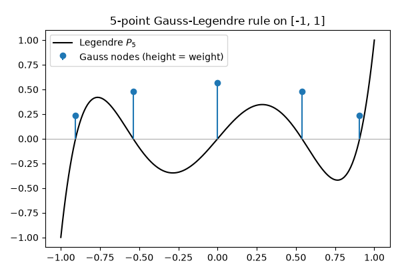
Gaussian quadrature: optimal nodes are exact to degree 2n-1
1854 – Riemann’s Definition of the Integral#
In his 1854 Habilitationsschrift on trigonometric series, Bernhard Riemann defined the integral as the limit of sums \(\sum f(\xi_i)\,\Delta x_i\) over ever finer partitions, with each \(\xi_i\) chosen anywhere in its subinterval. A function is integrable when every such choice gives the same limit. The definition made precise which functions can be integrated, and the simplest choices of sample point – left end, right end, midpoint – remain the first quadrature rules anyone meets. The endpoint rules are first-order accurate; the midpoint rule, whose errors cancel in pairs, is second-order.
Implementation: mathematicskit.calculus.systems.quadrature.RiemannSum
computes left, right, and midpoint Riemann sums, and the tests confirm
their first- and second-order convergence rates.
References: B. Riemann, “Über die Darstellbarkeit einer Function durch eine trigonometrische Reihe” (Habilitationsschrift, Göttingen, 1854), Abhandlungen der Königlichen Gesellschaft der Wissenschaften zu Göttingen 13 (1868), 87-132.
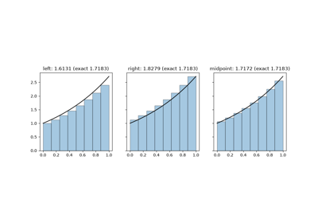
Riemann sums: the definition of the integral
1911-1927 – Richardson Extrapolation#
Lewis Fry Richardson is best known for his pioneering attempt at numerical weather prediction, which was hopelessly slow to compute by hand in his lifetime. In 1911, and more fully in a 1927 paper with John Arthur Gaunt, he showed how to combine two estimates of the same quantity, made at two different step sizes, so that their leading-order error terms cancel. The combination is more accurate than either estimate and costs no extra computation. Applied to a central-difference derivative, or to the trapezoidal rule (where it is called Romberg integration), Richardson extrapolation is the standard way to gain an extra order or two of accuracy almost for free.
Implementation: mathematicskit.calculus.systems.finite_differences.richardson_extrapolation()
implements this repeated-halving, error-cancelling extrapolation as a
triangular (Neville-style) table.
References: L. F. Richardson, “The Approximate Arithmetical Solution by Finite Differences of Physical Problems Involving Differential Equations,” Philosophical Transactions of the Royal Society A 210 (1911), 307-357; L. F. Richardson and J. A. Gaunt, “The Deferred Approach to the Limit,” Philosophical Transactions of the Royal Society A 226 (1927), 299-361.

Richardson extrapolation: cancelling error terms at a fixed step
1955 – Romberg Integration#
Werner Romberg’s 1955 paper combined two older ideas. The Euler-Maclaurin formula shows that the trapezoidal rule’s error is an expansion in even powers of the step \(h\), and Richardson extrapolation cancels such terms one at a time. Romberg halved the step repeatedly and extrapolated the resulting trapezoidal estimates into a triangular table,
whose diagonal converges far faster than any single column. The table’s second column is exactly Simpson’s rule.
Implementation: mathematicskit.calculus.systems.quadrature.RombergQuadrature
builds the Romberg table and returns it in the result’s extra
field. It is hand-rolled because SciPy removed its romberg routine
in version 1.15. The tests check the table’s first two columns against
the trapezoidal and Simpson rules.
References: W. Romberg, “Vereinfachte numerische Integration,” Det Kongelige Norske Videnskabers Selskabs Forhandlinger 28(7) (1955), 30-36.
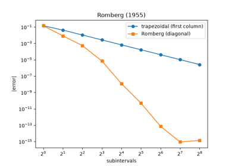
Romberg integration: extrapolating the trapezoidal rule
1960 – Clenshaw-Curtis Quadrature#
Charles Clenshaw and Alan Curtis’s 1960 paper proposed integrating the polynomial that interpolates \(f\) at the Chebyshev points \(\cos(k\pi/n)\). The weights have a closed form and are all positive, and the nodes of one rule are reused when \(n\) doubles, which suits adaptive computation. Gauss-Legendre quadrature is exact for polynomials of twice the degree, yet Lloyd Nicholas Trefethen showed in 2008 that for most smooth integrands Clenshaw-Curtis converges almost as fast.
Implementation: mathematicskit.calculus.systems.quadrature.clenshaw_curtis_nodes_and_weights()
computes the nodes and weights, and
ClenshawCurtisQuadrature
applies them on any interval. Both are hand-rolled, since SciPy has no
Clenshaw-Curtis rule. The tests check that the weights are positive and
integrate polynomials exactly.
References: C. W. Clenshaw and A. R. Curtis, “A Method for Numerical Integration on an Automatic Computer,” Numerische Mathematik 2 (1960), 197-205; L. N. Trefethen, “Is Gauss Quadrature Better than Clenshaw-Curtis?” SIAM Review 50(1) (2008), 67-87.
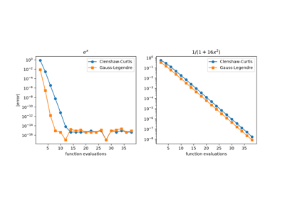
Clenshaw-Curtis vs. Gauss-Legendre quadrature
1964-1970 – Wengert, Linnainmaa, and Automatic Differentiation#
Robert Wengert’s 1964 paper described forward-mode automatic differentiation: every arithmetic operation also carries its derivative, propagated alongside the value by the chain rule. This is exactly what happens when ordinary arithmetic is performed on a “dual number” \(a + b\varepsilon\) with \(\varepsilon^2=0\). Seppo Linnainmaa’s 1970 master’s thesis described the complementary reverse mode, which propagates derivatives backward through a computational graph after a forward pass. Reverse mode computes the gradient with respect to any number of inputs at a small constant multiple of the cost of one forward evaluation, whatever the input dimension. Rediscovered and popularized as “backpropagation” in the neural-network literature of the 1980s, it is the algorithm that makes training a modern large neural network feasible at all.
Implementation: mathematicskit.calculus.systems.dual_numbers.Dual
implements forward-mode automatic differentiation with dual-number
arithmetic; Variable
and gradient() implement
reverse-mode automatic differentiation over a small computational graph.
References: R. E. Wengert, “A Simple Automatic Derivative Evaluation Program,” Communications of the ACM 7(8) (1964), 463-464; S. Linnainmaa, “The Representation of the Cumulative Rounding Error of an Algorithm as a Taylor Expansion of the Local Rounding Errors” (Master’s thesis, University of Helsinki, 1970; in Finnish).

Forward-mode automatic differentiation via dual numbers

Reverse-mode automatic differentiation for multivariable gradients
1967 – Lyness, Moler, and the Complex-Step Derivative#
James Lyness and Cleve Moler showed in 1967 that the derivatives of an analytic function can be computed from its values at complex points. The simplest consequence, popularized by William Squire and George Trapp in 1998, is the complex-step formula \(f'(x) \approx \operatorname{Im} f(x+ih)/h\). A real finite difference subtracts two nearly equal numbers, so making \(h\) small eventually destroys its accuracy. The complex step subtracts nothing, so \(h\) can be as small as \(10^{-100}\) and the result is exact to machine precision.
Implementation: mathematicskit.calculus.systems.finite_differences.complex_step_derivative()
implements the formula for any function written with complex-capable
operations. The tests show that it stays accurate at steps where the
central difference fails.
References: J. N. Lyness and C. B. Moler, “Numerical Differentiation of Analytic Functions,” SIAM Journal on Numerical Analysis 4(2) (1967), 202-210; W. Squire and G. Trapp, “Using Complex Variables to Estimate Derivatives of Real Functions,” SIAM Review 40(1) (1998), 110-112.
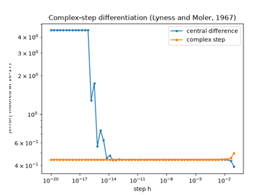
The complex-step derivative: no cancellation
1974 – Takahasi, Mori, and Tanh-Sinh Quadrature#
Hidetosi Takahasi and Masatake Mori’s 1974 paper introduced double-exponential quadrature. The substitution \(x = \tanh(\tfrac{\pi}{2}\sinh t)\) maps \((-1, 1)\) onto the whole real line and makes the transformed integrand decay double-exponentially, so the plain trapezoidal rule in \(t\) converges extremely fast. Nodes cluster near the endpoints with tiny weights, and the endpoints themselves are never evaluated. The method therefore handles integrable endpoint singularities, such as \(1/\sqrt{x}\) or \(\log x\), that defeat Gaussian rules, and it has become a standard tool in high-precision computation.
Implementation: mathematicskit.calculus.systems.quadrature.TanhSinhQuadrature
implements the substitution and trapezoidal sum, computing the node
positions without cancellation near the endpoints. It is hand-rolled
because scipy.integrate.tanhsinh exists only in SciPy 1.15 and
later.
References: H. Takahasi and M. Mori, “Double Exponential Formulas for Numerical Integration,” Publications of the Research Institute for Mathematical Sciences 9(3) (1974), 721-741.
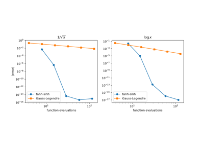
Tanh-sinh quadrature: integrating endpoint singularities
1983 – QUADPACK and Adaptive Quadrature#
Adaptive quadrature does not fix the number of subdivisions in advance. Instead it subdivides where the integrand needs it: estimate an interval’s integral two ways, and if the estimates disagree by more than a tolerance, split the interval and recurse. Robert Piessens, Elise de Doncker-Kapenga, Christoph Überhuber, and David Kahaner developed the QUADPACK library through the 1970s and published it as a book in 1983. It gave the idea its definitive, extensively validated implementation, which SciPy still ships essentially unchanged.
Implementation: mathematicskit.calculus.systems.quadrature.AdaptiveQuadrature
wraps scipy.integrate.quad(), which runs QUADPACK’s QAGS
routine under the hood.
References: R. Piessens, E. de Doncker-Kapenga, C. W. Überhuber, and D. K. Kahaner, QUADPACK: A Subroutine Package for Automatic Integration (Berlin: Springer, 1983).
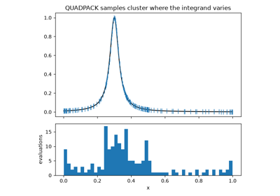
Adaptive quadrature (QUADPACK): subdividing where it is needed